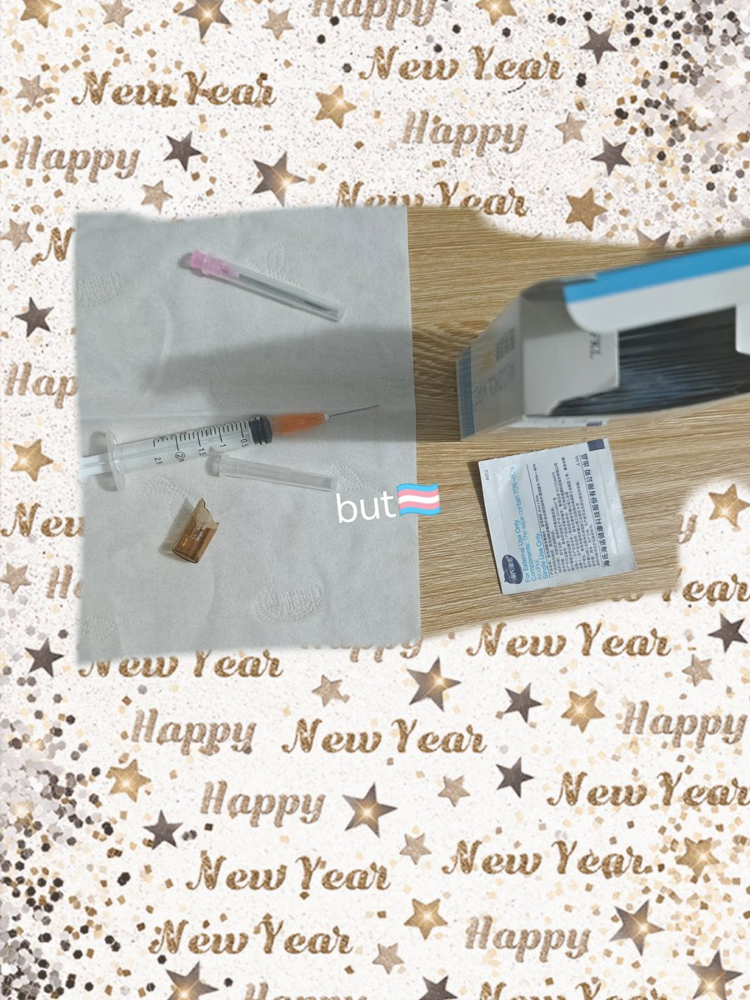

時璃風医詩🌈🏳️🌈
@hagishigure
@CldGeo 來，自己對比一下肌肉注射的針頭的長度差距。

Butꉂ ᳐˶ᵒ ᵕ ˂˶ ᳐ฅ🏳️⚧️（🚪88/188有涩图和视频）
@FTMbutxiaomao
20260106第七针睾酮ᕙ(＠°▽°＠)ᕗ
#ftm #跨性别 #跨性别男 https://t.co/HWewyd7IZW
九鸟
@CldGeo
争论的焦点不在于能不能在公共场合打雌，而是打针这个行为很容易被人误解而报警
警察不可能一口咬定这到底是雌、胰岛素还是毒品，上门来查肯定会影响店家生意和玩家正常游戏，也很容易引发店家、玩家与mtf群体的对立
你在哪打针确实是你的自由，但作为一个人是否应该考虑何时何地该做某事呢 https://t.co/ThrUKL7ez8